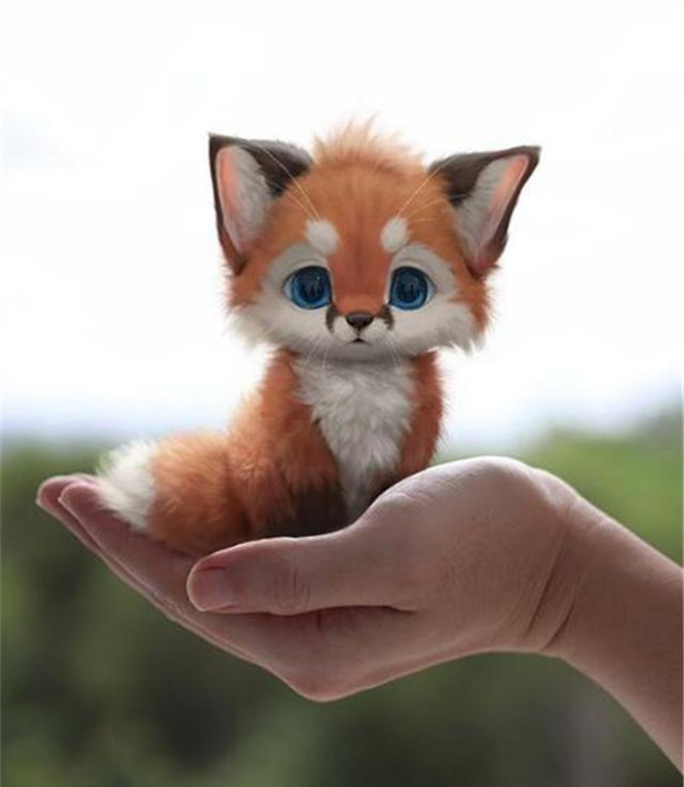
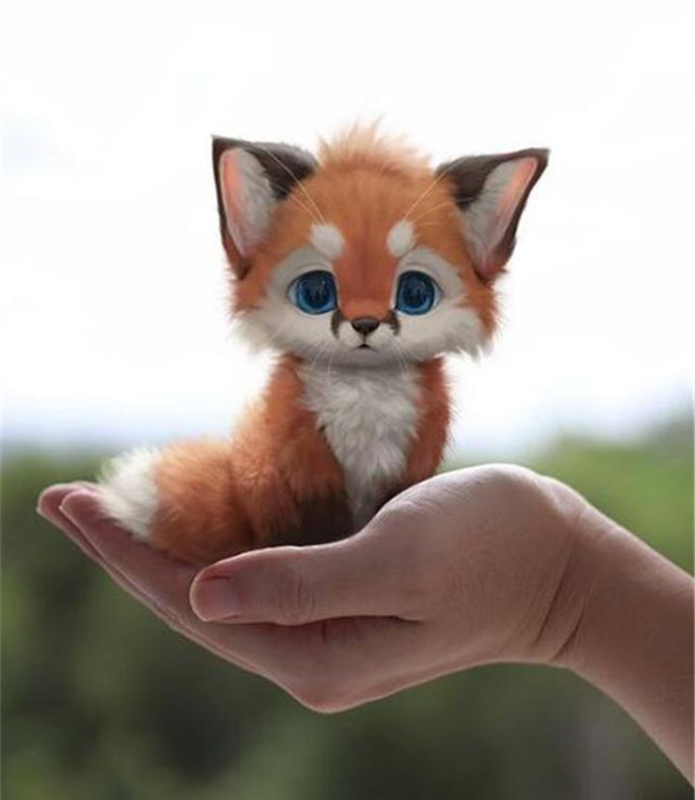

养不了宠物就画一只，马来西亚艺术家笔下的小狐狸...
- 微商百科
- 4小时前
- 阅读 517
话说，养一只宠物，似乎是很多人的梦想。但不能否认，因为很多限制，这个想法也只存在于很多人的脑海里。因此，不少人选择云吸猫，云吸狗的方式。然而，一位来自马来西亚的艺术家Yee Chong，用画笔创作了一只宠物小狐狸，呆萌可爱的模样，萌翻了无数吃瓜群众。
总之，几乎每一款Yee Chong设计的宠物，都拥有数量可观的庞大粉丝团。也是，谁能轻易抵抗这种萌萌哒的存在呢！
话说，养一只宠物，似乎是很多人的梦想。但不能否认，因为很多限制，这个想法也只存在于很多人的脑海里。因此，不少人选择云吸猫，云吸狗的方式。然而，一位来自马来西亚的艺术家Yee Chong，用画笔创作了一只宠物小狐狸，呆萌可爱的模样，萌翻了无数吃瓜群众。
总之，几乎每一款Yee Chong设计的宠物，都拥有数量可观的庞大粉丝团。也是，谁能轻易抵抗这种萌萌哒的存在呢！